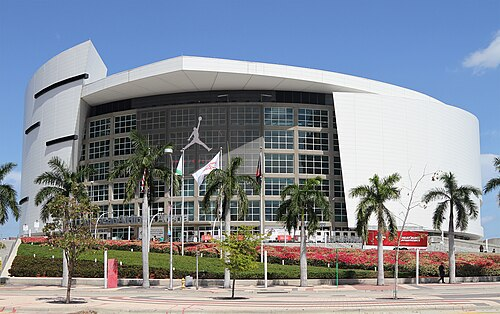
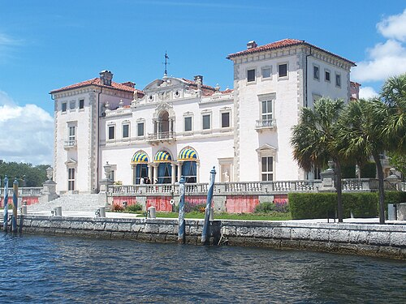

This map shows 17 of the most-searched sights in Miami as photo spots, ranked by how often people search for them: Ocean Drive, Kaseya Center, Vizcaya Museum, Bayside Marketplace and Bayfront Park lead the list. Every spot has a pin on the subject and a phone icon showing where to stand, with tips for shooting it on your phone: which lens to use, how to frame it, a settings tip and the best time of day. Directions and Navigate buttons take you to the standing point on foot or by public transport. 3 spots are free to view; the full map is for members.
The 3 free photo spots
1Ocean Drive
Ocean Drive is the street most people picture when they think of Miami's Art Deco seafront: a row of pastel-coloured hotel facades, with neon signs that come on as the light fades. The best-known frame is at the Colony Hotel, 736 Ocean Drive. Its lit neon sign and pastel facade are often named as the most photogenic on the street. Standing on the park side of the road, you can fit the sign, the building and a strip of dusk sky into one shot.
The timing matters. Dusk works best, when the neon is lit and there is still some colour left in the sky. Advice online disagrees: some people prefer early morning for emptier streets, others prefer night for the neon. Ocean Drive is also described in recent pages as partly car-free, so check current street closures before you go. Watch for traffic and keep out of the pedestrian flow while you line up the shot.
If you have time for a second picture, try the street-level view of the pastel row stretching away down Ocean Drive. Alternatively, walk into Lummus Park for a cleaner view of the Art Deco facades with fewer people in the frame.
Where it is: Ocean Drive is the seafront street lined with Art Deco hotels, with Lummus Park nearby. The Colony Hotel is at 736 Ocean Drive, and the park-side pavement in front of it is the spot for the classic neon-sign frame.
Shooting it on your phone
Lens: Start with the default lens (1x) to get the sign, the facade and some sky in one frame. If the pavement is too narrow to step back, switch to the ultra-wide (0.5x), but keep the sign away from the edges of the picture, where buildings can look stretched.
Where to stand: Stand right at the subject (park-side sidewalk of Ocean Drive, in front of the hotel at 736 Ocean Drive). The hotel's lit neon sign and pastel Art Deco facade, with a strip of dusk sky above. Walk to the Colony Hotel at 736 Ocean Drive and stand on the park-side pavement in front of it. From here the photo shows the hotel's lit neon sign and pastel Art Deco facade, with a strip of dusk sky above.
Framing: Turn on the gridlines and put the sign on one of the upper third lines, with the facade filling the lower part of the picture and a band of sky above. Keep your phone upright and level so the building doesn't lean. For an alternative, try the street-level view of the pastel row receding down Ocean Drive, or the row of facades from Lummus Park.
Settings tip: Tap on the neon sign to focus, then slide the exposure down a little so the lit letters keep their colour and don't turn white. As the light drops, night mode can help, but hold the phone steady against your body, or rest your elbows on something solid, while it takes the picture.
Best time: Dusk, when the neon is on and there is still some colour in the sky. Early morning is quieter if you prefer empty streets.
2Kaseya Center

Kaseya Center is the big waterfront arena beside Biscayne Bay in downtown Miami, home of the Miami Heat basketball team. It opened on 31 December 1999 as American Airlines Arena and has carried the Kaseya name since April 2023. Arquitectonica was one of the design firms behind it, and the arena holds about 19,500 people. Inside is an unusual scoreboard by the artist Christopher Janney, inspired by sea anemones and able to change colour with the mood of the event.
For a phone photo, the arena works best as part of the downtown waterfront rather than as a close-up. The best-suited spot is Bayfront Park, on the seawall path facing the bay. From the water's edge you can include the open water and the city skyline. The arena sits a short walk to the north, so it will be one building among several. Check the framing on the spot, because it may look small at first. Zooming in a little helps, and you can also try the Maurice A. Ferré Park promenade, which gives a bay-side skyline view with the arena among the waterfront buildings. If you would rather have the building itself, its frontage on Biscayne Boulevard gives a straight-on or slightly angled view of the facade and its large signage, with palm trees along the pavement.
On match or concert days the area gets busy with crowds and traffic, so keep your phone close and look around before you step back to frame a shot.
Where it is: Kaseya Center is in downtown Miami on Biscayne Bay, along the Biscayne Boulevard waterfront. It lies just north of Bayfront Park.
Shooting it on your phone
Lens: Start with the default lens (1x) to take in the bay and skyline, then try telephoto (2x-5x, depending on your phone) to bring the arena closer. You will not need the ultra-wide (0.5x) from here unless you want a lot of sky and water.
Where to stand: Stand in Bayfront Park (waterfront seawall path facing the bay). The downtown towers rising behind you with the open bay in front, which can frame the arena among the skyline from the water's edge. On the waterfront seawall path facing the bay. The downtown towers rise behind you and the open water is in front, and the arena lies to the north along the waterfront, so turn that way to frame it among the skyline.
Framing: Turn on the gridlines and keep the horizon level, with the water along the bottom third and the skyline above. Place the arena off-centre rather than in the middle. If it looks too small at 1x, zoom in a step or two. For an alternative, try the promenade at Maurice A. Ferré Park, which gives a bay-side view of the skyline with the arena among the waterfront buildings.
Settings tip: Tap the arena to focus, then slide the exposure down a little if the sky is washing out. After dark, use night mode and rest your elbows on a railing or wall to keep the shot steady. Keep the phone still for the second or two it needs.
Best time: Early morning for soft light, late afternoon for warm tones, or after dark for the lit skyline.
3Vizcaya Museum and Gardens

Vizcaya is a winter villa built by the businessman James Deering on the shore of Biscayne Bay. It is now a museum with formal gardens. The house borrows from Italian Renaissance villas, but it was designed in a Mediterranean Revival style with a few Baroque touches. That mix of pale stonework, carved detail and clipped greenery gives you plenty to frame, even on a phone. Most of the villa was built between 1914 and 1922, and Deering stayed in it each winter from 1916 until he died in 1925. The designers adapted European garden ideas to a subtropical climate, using local coral stone trim and planting palms and philodendrons, which were not part of the Tuscan gardens that inspired Vizcaya. The gardens are laid out as a series of 'rooms', including a Secret Garden, a Theatre Garden, a Maze Garden and a Fountain Garden. A raised garden mound acts as the focal point, so there is always another view to find. The estate became a National Historic Landmark in 1994 and is owned by Miami-Dade County. For photographs, think in two scales: the whole facade, and then details such as doorways, statues, balustrades and clipped hedges. The phone icon on the map is very close to the villa, so you will need to step back or go wide to fit the building in. Look for repeating lines in the paths and steps, which lead the eye towards the house. Check the official site before you go for entry arrangements and any rules about photography indoors.
Where it is: Vizcaya stands on the shore of Biscayne Bay in the Coconut Grove neighbourhood of Miami.
Shooting it on your phone
Lens: Start with the ultra-wide (0.5x) for the facade, because the phone icon on the map is close to the villa. Use the default lens (1x) for a more natural look. Use telephoto (2x-5x, depending on your phone) for carved details and statues.
Where to stand: Stand about 20 m north-west of the subject, at the phone icon on the map, and face south-east.
Framing: Turn on gridlines and keep the verticals straight so the walls do not lean. Hold the phone level, and place the villa on one of the grid lines rather than dead centre. Then switch to 2x or more for close shots of doorways, stonework and sculpture. A path or flight of steps in the foreground leads the eye towards the house.
Settings tip: Tap the brightest part of the facade to focus, then lower the exposure slider a little so pale stone does not turn white. A Live Photo is handy for catching a moment when people walk out of your frame.
Best time: Softer morning or late-afternoon light usually flatters pale stone better than the harsh midday sun. Early in the day may also mean fewer people in your shots.
14 more spots for members
These spots are on the map as grey numbered pins. Where to stand, the phone tips, photos and directions for them come with Explorer membership.
- 4Bayside Marketplace · members
- 5Bayfront Park · members
- 6Wynwood Walls · members
- 7Casa Casuarina · members
- 8Phillip and Patricia Frost Museum of Science · members
- 9Pérez Art Museum Miami · members
- 10South Pointe Park · members
- 11Lincoln Road · members
- 12Española Way · members
- 13Freedom Tower · members
- 14Holocaust Memorial of Miami Beach · members
- 15Bass Museum · members
- 16Wolfsonian–FIU · members
- 17Máximo Gómez Park · members
Get every spot with Explorer membership
Explorer opens every spot on every map in the library: where to stand, how to frame it on your phone and how to get there, plus the Xdatrys Maps app with maps saved on your phone for use without signal. $9.99 a month or $59.99 a year; cancel any time.
Join Explorer Compare free and Explorer
Not ready to join?
Get Pocket Lens, our free daily smartphone travel photography newsletter.
Free, and you can unsubscribe at any time. If the form does not show, sign up on our newsletter page.
Questions
What are the top photo spots in Miami?
The first three on this map are Ocean Drive, Kaseya Center and Vizcaya Museum. They are ranked by how often people search for them. The full map has 17.
Where should I stand to photograph Ocean Drive?
Stand right at Ocean Drive (park-side sidewalk of Ocean Drive, in front of the hotel at 736 Ocean Drive). Start with the default lens (1x) to get the sign, the facade and some sky in one frame.
When is the best time to photograph Kaseya Center?
Early morning for soft light, late afternoon for warm tones, or after dark for the lit skyline.
How do I get to Vizcaya Museum?
Head for Vizcaya in Coconut Grove, the well-known neighbourhood on Biscayne Bay.
Credits
Map data © OpenStreetMap contributors (ODbL); base map built with Protomaps from OpenStreetMap data. Photos from Wikimedia Commons, credited under each photo with their licence. Background reading for the free spots: Kaseya Center, Vizcaya Museum and Gardens (Wikipedia, CC BY-SA). Access rules and opening times change: check before you go.